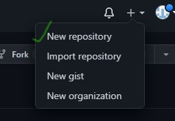

Tutorial For Learning Git Commands
How to link the local repositry with remote repositry
Run git init command : First we have to declare the local repositry as a git repository.
Now you have to make a new repository on your GitHub account with defualt settings.
